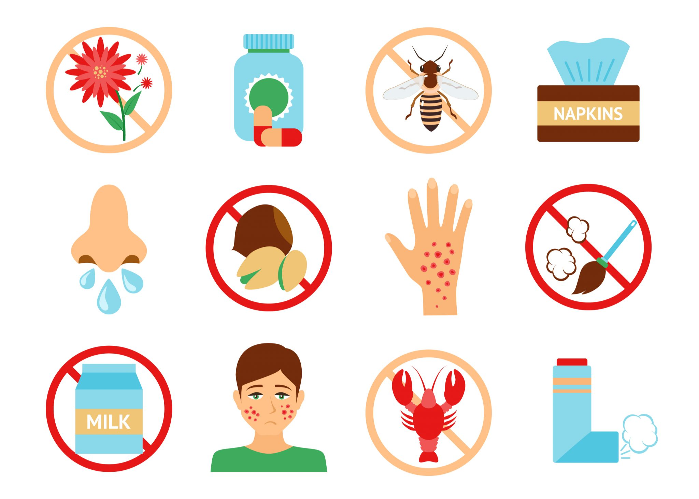
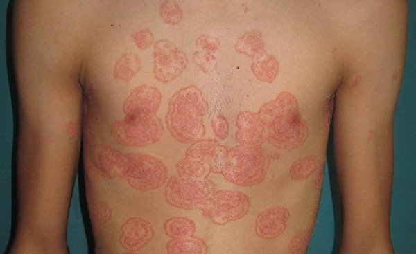

Diarrea aguda en niños de 2 meses a 5 años
IVU no complicada en la mujer
Exatemas infecciosos en la infancia
Tiña y onicomicosis
Cuadro clínico de diarrea
Enfermedades exantemáticas

Hipersensibilidad
Infecciones urinarias bajas y altas

Tiñas